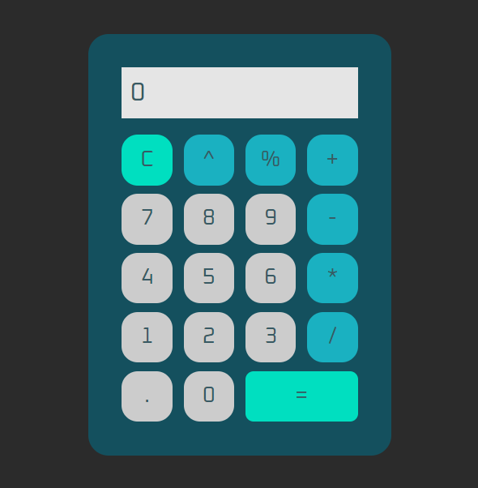
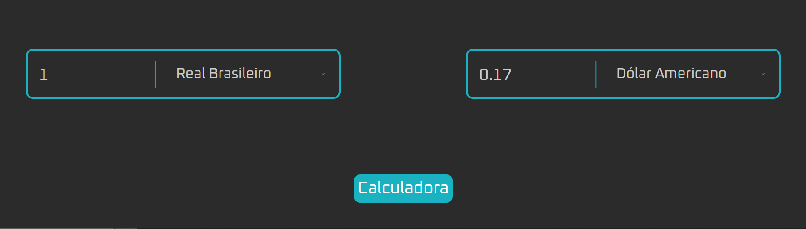

Pedro
Bastos
Uma página pessoal focada em expor meus projetos e trabalhos desenvolvidos ao longo da faculdade e do meu desenvolvimento.

Quem é Pedro?
Sou natural da capital de São Paulo me mudei para a cidade de Marília aos 3 anos, onde resido até hoje. Foi aqui que me formei no ensino médio, no colégio Esquema Único, e decidi seguir minha paixão por tecnologia, ingressando no curso de Desenvolvimento de Software Multiplataforma na Fatec.
Sou uma pessoa que gosta de encontrar soluções criativas para os desafios diários, sempre com bom humor e disposição para superar obstáculos. Acredito que a persistência e o pensamento inovador são fundamentais para o crescimento pessoal e profissional.
Projetos
Site de banda
Este projeto foi um dos primeiros trabalhos da matéria de Desenvolvimento Web I, que consistia em criar o site para uma banda fictícia chamada Os Jabuticabos Radicais.
Neste projeto foi onde desenvolvi meus conhecimentos sobre display flex, que foi o principal objetivo de aprendizado do projeto. O site foi desenvolvido com foco em desktop, com foco em gerar responsividade para diferentes tamanhos de janelas da plataforma.

Calculadora
Minha calculadora foi um projeto pessoal. Após a introdução ao JavaScript ainda me faltava conhecimentos que se adquirem na faser prática, por isso, resolvi iniciar este projeto.
No começo enfrentei várias dificuldades por ser meu primeiro projeto com a linguagem, mas depois dos primeiros dias consegui evoluir e implementar as funções que queria. A página tabmém conta com temas tanto de modo claro e escuro, quanto de alteração de cor.
Além da calculadora implementei um conversor de moedas na mesma página, que puxa os valores de conversão diários por meio de uma API gratuita e converte os valores conforme desejado.
